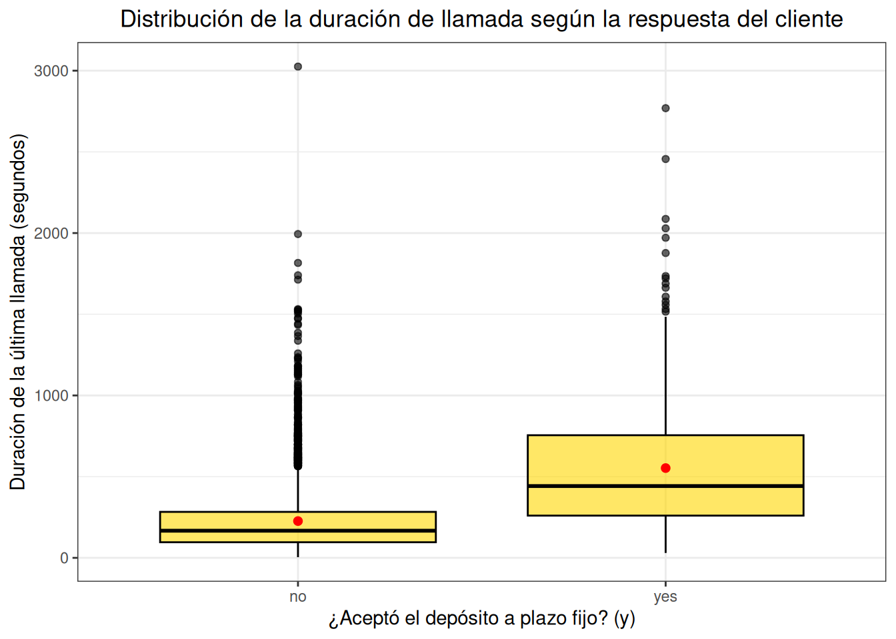

Capitulo 2 Análisis exploratorio bivariado
- A continuación vamos a comparar la variable y respecto a las variables numéricas independientes.
data %>%
ggplot(aes(x = y, y = age)) +
geom_boxplot(fill = "green", alpha = 0.6, color = "black") +
stat_summary(fun = mean, geom = "point", shape = 20, size = 3, color = "red") +
labs(
title = "Distribución de la edad según la respuesta del cliente",
x = "¿Aceptó el depósito a plazo fijo? (y)",
y = "Edad del cliente"
) +
theme_bw() +
theme(
plot.title = element_text(hjust = 0.5),
strip.background = element_rect(fill = "gray90", color = NA),
strip.text = element_text(face = "bold")
)El grafico muestra la relación entre la variable y (“yes” o “no”) y la variable numérica age. A simple vista un análisis visual nos indica que la edad, de manera aislada no es un factor determinante para predecir la aceptación del depósito a plazo fijo en la campaña. La similitud es casi igual en medianas, rangos y dispersión entre los clientes que si aceptaron y los que no aceptaron. Sin embargo, sería necesario considerar otras variables en conjunto con la edad, en lugar de usarla como un criterio principal.
data %>%
ggplot(aes(x = y, y = balance)) +
geom_boxplot(fill = "#1E90FF", alpha = 0.6, color = "black") +
stat_summary(fun = mean, geom = "point", shape = 20, size = 3, color = "red") +
labs(
title = "Distribución del balance según la respuesta del cliente",
x = "¿Aceptó el depósito a plazo fijo? (y)",
y = "Balance del cliente (€)"
) +
theme_bw() +
theme(plot.title = element_text(hjust = 0.5))La mediana y la media que se ve como el punto rojo son similares tanto para los clientes que aceptaron como los que no. Sin embargo, hay muchos valores atípicos en los dos grupos lo que nos puede indicar que la distribución está sesgada. Como conclusión, el balance no parece tampoco ser conciso a la hora de determinar la aceptación o rechazo de la oferta ya que los valores atípicos indican que hay presencia de clientes con perfiles financieros distintos.
data %>%
ggplot(aes(x = y, y = duration)) +
geom_boxplot(fill = "#FFD700", alpha = 0.6, color = "black") +
stat_summary(fun = mean, geom = "point", shape = 20, size = 3, color = "red") +
labs(
title = "Distribución de la duración de llamada según la respuesta del cliente",
x = "¿Aceptó el depósito a plazo fijo? (y)",
y = "Duración de la última llamada (segundos)"
) +
theme_bw() +
theme(plot.title = element_text(hjust = 0.5))
En esta variable se nota una diferencia entre la aceptación y el rechazo, ya que la duración de la llamada es marcada mayormente en los clientes que aceptaron. Mientras que en el grupo que no aceptó la mayoría de las llamadas fueron cortas.
La duración de la llamada parece ser un predictor fuerte de aceptación. Como interpretación se puede decir que las llamadas mas largas tienden a asociarse con una mayor probabilidad de éxito, posiblemente ya que al haber mayor tiempo, hay mas tiempo de persuasión.
data %>%
ggplot(aes(x = y, y = campaign)) +
geom_boxplot(fill = "#32CD32", alpha = 0.6, color = "black") +
stat_summary(fun = mean, geom = "point", shape = 20, size = 3, color = "red") +
labs(
title = "Distribución de número de contactos en la campaña actual según la respuesta del cliente",
x = "¿Aceptó el depósito a plazo fijo? (y)",
y = "Número de contactos en la campaña actual"
) +
theme_bw() +
theme(plot.title = element_text(hjust = 0.5))La mediana del número de contactos en la campaña es muy baja en ambos grupos, con unos valores atípicos que llegan hasta 50 contactos, sin embargo, el grupo de aceptación tiende a tener un número menor de contactos. Para concluir se nota que una cantidad alta de intentos de contacto no necesariamente mejora la tasa de éxito e incluso podría llegar a ser contraproducente y los clientes que si aceptaron requerían en promedio menos intentos.
data %>%
ggplot(aes(x = y, y = pdays)) +
geom_boxplot(fill = "#FF69B4", alpha = 0.6, color = "black") +
stat_summary(fun = mean, geom = "point", shape = 20, size = 3, color = "red") +
labs(
title = "Distribución de días desde el último contacto según la respuesta del cliente",
x = "¿Aceptó el depósito a plazo fijo? (y)",
y = "Días desde el último contacto"
) +
theme_bw() +
theme(plot.title = element_text(hjust = 0.5))Al analizar el grafico se muestra que el tiempo desde el último contacto influye fuertemente en la probabilidad de éxito de la campaña.
Los clientes que aceptaron tendieron a ser contactados más recientemente en comparación con los que la rechazaron. Esta diferencia indica que el tiempo transcurrido desde el último contacto influye directamente en la probabilidad de éxito de la campaña. Aunque algunos clientes pueden mantener interés incluso después de largos períodos sin contacto, la estrategia más efectiva parece ser enfocarse en contactos más frecuentes.
- Comparacion de las variables numéricas independientes con respecto a la variable y (en tablas).
age_y <- data %>%
group_by(y) %>%
summarise(n = length(age),
media = mean(age),
ds = sd(age),
mediana = median(age),
minimo = min(age),
maximo = max(age),
Q1 = quantile(age, 0.25),
Q3 = quantile(age, 0.75),
IQR = IQR(age)) %>%
mutate(variable = "age", niveles = as.character(y)) %>%
select(variable, niveles, everything(), -y)
balance_y <- data %>%
group_by(y) %>%
summarise(n = length(balance),
media = mean(balance),
ds = sd(balance),
mediana = median(balance),
minimo = min(balance),
maximo = max(balance),
Q1 = quantile(balance, 0.25),
Q3 = quantile(balance, 0.75),
IQR = IQR(balance)) %>%
mutate(variable = "balance", niveles = as.character(y)) %>%
select(variable, niveles, everything(), -y)
duration_y <- data %>%
group_by(y) %>%
summarise(n = length(duration),
media = mean(duration),
ds = sd(duration),
mediana = median(duration),
minimo = min(duration),
maximo = max(duration),
Q1 = quantile(duration, 0.25),
Q3 = quantile(duration, 0.75),
IQR = IQR(duration)) %>%
mutate(variable = "duration", niveles = as.character(y)) %>%
select(variable, niveles, everything(), -y)
campaign_y <- data %>%
group_by(y) %>%
summarise(n = length(campaign),
media = mean(campaign),
ds = sd(campaign),
mediana = median(campaign),
minimo = min(campaign),
maximo = max(campaign),
Q1 = quantile(campaign, 0.25),
Q3 = quantile(campaign, 0.75),
IQR = IQR(campaign)) %>%
mutate(variable = "campaign", niveles = as.character(y)) %>%
select(variable, niveles, everything(), -y)
pdays_y <- data %>%
group_by(y) %>%
summarise(n = length(pdays),
media = mean(pdays),
ds = sd(pdays),
mediana = median(pdays),
minimo = min(pdays),
maximo = max(pdays),
Q1 = quantile(pdays, 0.25),
Q3 = quantile(pdays, 0.75),
IQR = IQR(pdays)) %>%
mutate(variable = "pdays", niveles = as.character(y)) %>%
select(variable, niveles, everything(), -y)
bind_rows(age_y,balance_y,duration_y,campaign_y,pdays_y)## # A tibble: 10 × 11
## variable niveles n media ds mediana minimo maximo Q1 Q3 IQR
## <chr> <chr> <int> <dbl> <dbl> <dbl> <int> <int> <dbl> <dbl> <dbl>
## 1 age no 4000 41.0 1.02e1 39 19 86 33 48 15
## 2 age yes 521 42.5 1.31e1 40 19 87 32 50 18
## 3 balance no 4000 1403. 3.08e3 420. -3313 71188 61 1407 1346
## 4 balance yes 521 1572. 2.44e3 710 -1206 26965 171 2160 1989
## 5 duration no 4000 226. 2.10e2 167 4 3025 96 283 187
## 6 duration yes 521 553. 3.90e2 442 30 2769 260 755 495
## 7 campaign no 4000 2.86 3.21e0 2 1 50 1 3 2
## 8 campaign yes 521 2.27 2.09e0 2 1 24 1 3 2
## 9 pdays no 4000 36.0 9.63e1 -1 -1 871 -1 -1 0
## 10 pdays yes 521 68.6 1.22e2 -1 -1 804 -1 98 99En general, los clientes que aceptan el deposito a plazo tienden a ser ligeramente mayores, tener un saldo promedio algo mas alto y sobre todo participar en llamadas mas largas. Además, suelen requerir menos intentos de contacto y se nota que con más frecuencia tiene interacción previa con la entidad. Como puntos claves se destaca que la duración de la llamada es la variable que más diferencia los grupos ya que al ser más largas se asocia con mayor probabilidad de aceptación. Por otra parte, al haber menor insistencia en la campaña y un contacto previo parecen estar relacionados con un mayor éxito y por último en algunas variables se presentan una alta dispersión por lo que más adelante conviene realizar unos modelos predictivos para confirmar la fuerza de estas relaciones.